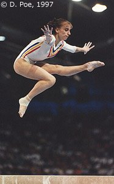

Claudia Presacan (ROM)
1998 European AA Bronze Medalist

Medal Total
Olympic Games: 1
Gold
World Championships: 3 Gold
European Championships: 2 Bronze
Claudia was born on December 28, 1979, in Sibiu. She began gymnastics at age 4 1/2 in her hometown. In 1993, she was named to the junior national team and moved to Bucharest. In late 1995, she moved again -- this time to Deva to train with the senior national team. An ankle injury kept her off the 1996 Olympic team, but she came back strong in 1997. She retired briefly in 1999, after a shoulder injury kept her off the Worlds team. But once again she made a spectacular comeback, this time making the 2000 Olympic team and fulfilling her dream of winning a gold medal.
Following the Sydney Games, she took up rowing and even competed at the 2001 World University Championships as a coxswain. In 2002, she and two teammates (Lavinia Milosovici and Corina Ungureanu) appeared nude for a Japanese DVD and magazine. The trio received professional suspensions from the Romanian Gymnastics Federation and were barred from representing Romania (as judges or coaches) for five years.
Competition Results
1993
Charleroi International: 3rd AA, 2nd UB, 2nd B
Jr. ROM-GER Dual Meet: 1st Team, 6th AA
1994
Blume Memorial: 1st AA
Jr. European Championships: 1st FX, 4th V
World Championships (Dortmund): 1st Team
1995
Hapoel Games: 2nd AA
Hungarian International: 3rd AA
World Championships: 1st Team
1996
ITA-BLR-ROM-RUS Meet: 15th AA
1997
GER-ROM Dual Meet: 1st Team, 8th AA
Glasgow Grand Prix: 2nd B, 3rd UB
Hungarian International: 2nd AA
Intl. Championships of Romania: 1st AA, 1st B
Intl. Team Championships: 1st Team, 3rd AA
ITA-ROM-UKR Meet: 1st Team, 2nd AA
Massilia Cup: 5th UB
Thai World Class Competition: 3rd AA
World Championships: 1st Team, 8th AA, 5th UB, 6th FX
1998
Copa Gimnastica: 4th AA, 2nd UB, 2nd B, 3rd FX
European Championships: 3rd AA, 3rd UB
Gander Memorial: 2nd AA, 1st UB, 2nd FX
Intl. Team Championships: 1st Team, 4th AA
1999
Copa Gimnastica: 5th V
ESP-ROM Dual Meet: 1st Team, 5th AA
Intl. Championships of Romania: 2nd AA, 1st UB, 2nd B, 2nd FX, 3rd V
Intl. Team Championships: 5th AA
2000
Intl. Championships of Romania: 30th AA
Olympic Games: 1st Team, 4th B
ROM Championships: 5th AA
This page was created on November
21, 2005.
© Gymn Forum